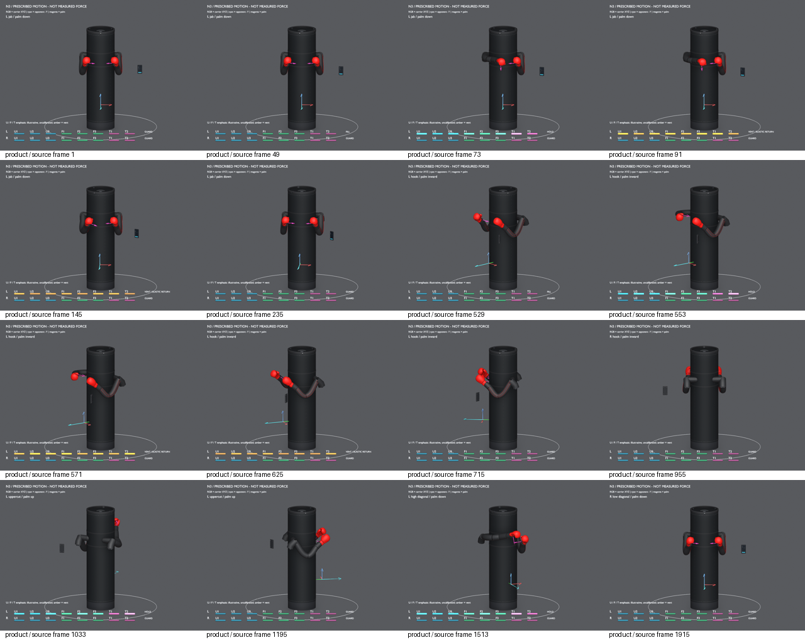
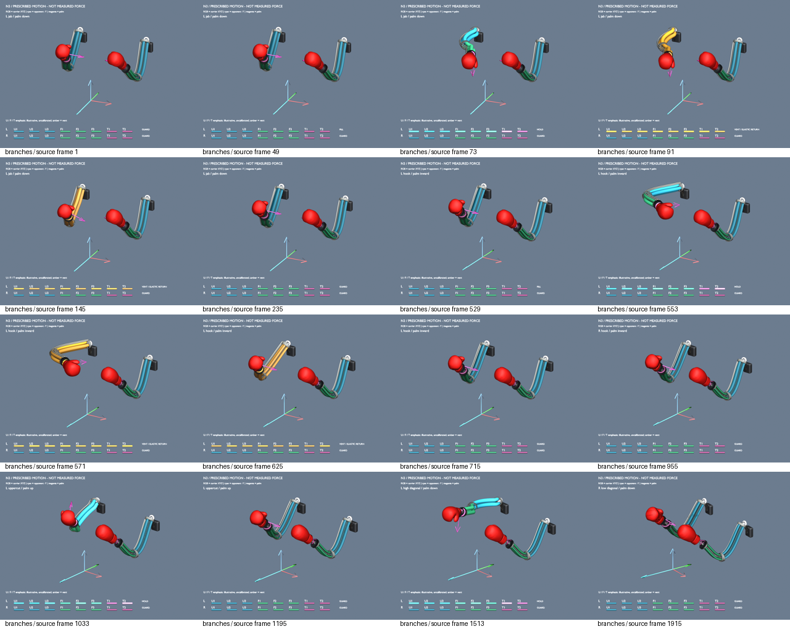

01 — Status now
N3 = n2-delta-g03-g05. Ola disposition: accept limited CLOSED-A for G-03/G-05 sampled proxies; physical clearance and retention remain OPEN. NEXT_PROMPT stays awaiting_michael.
| Pass | What changed | Key defect statuses |
|---|---|---|
| N1 | Full-product soft-continuum freeze twin; films/stills; baseline hash preserved. | G-03 / G-05 FAIL on proxy; A-05 drift; C-01 / B-06 Critical OPEN. |
| N2 | Track A glove registration, U/F/T cues, palm/carrier frames; hybrid labels cleaned. | A-05 CLOSED-A; A-03 depiction addressed; G-03 still FAIL (−2.00 mm); G-05 still 0 mm. |
| N3 | Geometry delta only: 8 mm U/F lateral bow + 5 mm rotating-cover edge insets. Motion/cue semantics inherited. | G-03 CLOSED-A (+3.95 mm proxy)· G-05 CLOSED-A (~5 mm)· A-05 CLOSED-A· B-03 / C-01 / B-06 OPEN |
02 — Architecture freeze
Soft air-pneumatic continuum distal arms. Main filled bag and mast stay stationary; only the shoulder carrier rotates. Isolation, sealing, and physical chamber independence are unverified.
| Group | Chambers | Role (qualitative) | Display cue |
|---|---|---|---|
| U | U1, U2, U3 | Upper-section bend branches | Cyan-blue |
| F | F1, F2, F3 | Forearm bend branches | Green |
| T | T1, T2 | Opposed soft torsion (wrist) | Magenta |
U/F/T colors and bar emphasis are uncalibrated pedagogy — not pressure, strain, flow, duty cycle, or valve commands. Mesh motion remains independently prescribed.
03 — Visual review
N3 films are prescribed SE(3) trajectories at 80 s / 4 fps. Use speed controls if the browser allows; otherwise native video controls work.
Product review
Branches / U-F-T cues
Clearance comparison & key stills






If a media file fails to load, that figure is a broken path on this checkout — open from the machine that holds n3-geometry-delta/media/ (Git LFS / local render). N2 before films remain under n2-track-a when present.
04 — Geometry delta
Plain language
We moved the soft-arm path slightly outward (an 8 mm bow along the U and F sections) and shortened the rotating band’s height (5 mm insets on each edge, 10 mm total height reduction) so the model’s keep-out and gap numbers pass. That is digital housekeeping. It does not mean the trainer can punch safely or with known force yet.
Engineering (sampled)
| Metric | N2 | N3 | Notes |
|---|---|---|---|
| G-03 71 mm radial centerline proxy (worst) | −2.003666 mm | +3.954128 mm (L_F, frame 1499) | CLOSED-A for sampled proxy; physical / triangle / loaded clearance OPEN. |
| G-05 lower cover ↔ band / band ↔ upper | 0 mm | ~5.000 mm each (4.999995 mm min) | CLOSED-A for nominal Z separation; B-03 retention still OPEN. |
| A-05 wrist–glove registration | CLOSED-A | max offset 0.000489 mm | CLOSED-A retained across 15,356 arm/time observations. |
Method: nominal 8 mm sinusoidal lateral bow in carrier X over U/F sections (zero at shoulder and forearm distal interface; shared 8 mm at U/F junction). Same section-parametric displacement on skins, sleeves, covers, bands, seams, webbing, feeds. Wrist/glove geometry inherited. Cover inset does not move fixed covers, fill, or hardware.
05 — Workstreams Track A / B / C / D
| Track | Scope | N3 status |
|---|---|---|
| A | Digital twin / visualization V&V (geometry, films, registers) | Current baseline = N3 geometry; limited CLOSED-A on G-03/G-05 proxies |
| B | Coupon System ID: pressure → strain → tip motion; soft-wrist; return/vent | Not started — planning is the next engineering value if Michael authorizes |
| C | Instrumented contact / fault envelope on fixtures (not people) | Blocked on Track B evidence; C-01 remains Critical OPEN |
| D | Real perception–action CV / visual servoing | Out of scope; N3 media is not real CV |
06 — Open Critical / High
| ID | Severity | Why it stays open |
|---|---|---|
| C-01 | Critical / OPEN | No measured pressure-to-motion-to-contact chain. Track A cannot close strike impulse. |
| B-06 | Critical / OPEN | Root / bearing retention / hub / weld / anchor load path incomplete. No invented ratings. |
| B-03 | High / OPEN | Positive cover gaps are not a retained or guarded interface. Need sewn edge retention, protected flexible overlap, tolerances, padding, pinch/abrasion fixtures. |
07 — Plain-language glossary
Mandatory for Michael review — same definitions as the N3 engineering assessment.
| Term | Plain words | Why it matters here |
|---|---|---|
| Track A | Making and checking the 3D/digital model and review videos so the design is understandable. | Proves the story of motion and shape — not that a real arm hits hard enough. |
| Track B | Lab-style tests on soft-arm pieces (coupons) to measure how air pressure changes shape and tip motion. | Needed before honest talk about punch power. |
| Track C | Instrumented hit tests on fixtures (not people) for contact force and fault behavior. | Safety and contact claims. |
| G-03 | Clearance check: does the soft arm get too close to (or into) the bag’s keep-out cylinder? Centerline proxy in mm. | Negative = centerline dips inside keep-out. N3 fixed the model proxy to about +4 mm. Real padded clearance still unproven. |
| G-05 | Gap check between rotating band and fixed covers above/below (axial / up-down). | Zero gap meant faces touched in the model. N3 opened ~5 mm nominal. Real sew/retention still open (B-03). |
| CLOSED-A | Closed for this visualization / model-audit purpose only. | Not “ready to manufacture” or “safe in contact.” |
| N1 / N2 / N3 | Versioned Blender successors. N1 baseline; N2 glove/cues; N3 clearance/gap geometry. | Older audited binaries stay preserved; lineage stays reviewable. |
| READY_FOR_OLA | Marker in the chat log meaning “pass settled — Ola should review.” | Wakes Robotics Desk review; missing it causes progress chase. |
| Proxy | Automated measurement script on many animation frames; a stand-in metric, not a lab load test. | Good for catching model mistakes early; bad if treated as physical proof. |
| Architecture freeze | Soft air-filled fabric arms (not rigid metal sticks), 8 chambers/arm, bag stays put, shoulders rotate on the mast. | Stops quiet return to cylinders/cams mid-project. |
08 — Files & packets
- N3 INDEX.html (A–J nav)
- EXECUTIVE_REVIEW / .md
- DEFECT_REGISTER / .md
- ENVELOPE_GEOMETRY_AUDIT (F)
- CONTINUUM_PNEUMATIC_INTENT (D)
- DOF_MECHANISM
- INTERFACE_VULNERABILITIES
- PUNCH_PATH_CHECKLIST
- POSE_ATLAS
- TOOLCHAIN_REPRO
- CHANGELOG_OPEN_ITEMS
- ENGINEERING_ASSESSMENT_N3…
- ENGINEERING_ASSESSMENT_N2…
- N1 product dossier archive
- revision_n/START_HERE.html (N1-era archive)
- chats/NEXT_PROMPT.md (status: awaiting_michael)
- Preserved N2 packet
09 — How to open
- Preferred: from the repo root on DESKTOP-P08972I run
Start_Review.ps1. It printshttp://127.0.0.1:8766/revision_n/START_HERE.htmltoday; after this page lands, openhttp://127.0.0.1:8766/START_HERE.html(root) orhttp://127.0.0.1:8766/reviews/2026-09-19/START_HERE.html. - file:// fallback: open
C:\Users\mfawe\OneDrive\Documents\GitHub\robotic-punching-bag\START_HERE.html
Some browsers restrict local video under file:// — use the local server if films do not play. - Git LFS: pull media under
reviews/2026-09-19/n3-geometry-delta/media/if stills/films are missing.
Do not set NEXT_PROMPT to ready_for_astra from this page. Commit/push left to Michael / Ibrahim.